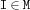
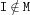

| << Prev | - Up - | Next >> |
monitorIn{FS.monitorIn *M ?Is}
This procedure writes all elements of M to Is as soon as  becomes known. When M becomes determined the stream Is will be closed.
monitorOut{FS.monitorOut *M ?Is}
This procedure writes all elements of M to Is as soon as  becomes known. When M becomes determined the stream Is will be closed.
forAllIn{FS.forAllIn *M +P/1}
This procedure applies P/1 to all elements of M.
| << Prev | - Up - | Next >> |